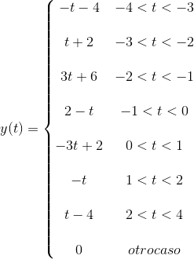

P04: Convolución y correlación
- Enriquez Melendez Jesus
- Rosas Palacios Alan
Contents
- Objetivos
- Introducción
- Metodos numericos de integración
- Formulas cerradas de Newton-Cotes
- Regla del trapecio (n=1)
- Regla de Simpson (n=2)
- Regla de tres octavos de Simpson (n=3)
- Formulas de Newton-Cotes compuestas
- Regla compuesta del trapecio
- Regla compuesta de Simpson
- Cuadratura gaussiana
- Convoluciones
- PR04 Problema 1
- PR04 Problema 3
- Correlaciones
- PR06 Problema e
- PR06 Problema f
- Referencias
Objetivos
- Conocer métodos básicos de integración numérica
- Manipulación de instrucciones en MATLAB
- Simular convoluciones y correlaciones de señales continuas
Introducción
Al momento de aplicar las Matemáticas a situaciones del mundo real nos encontramos a menudo con problemas que no pueden ser resueltos analíticamente o de manera exacta y cuya solución debe ser abordada con ayuda de algún procedimiento numérico.
¿Qué es un método numérico?
Un método numérico es un procedimiento mediante el cual se obtiene, casi siempre de manera aproximada, la solución de ciertos problemas realizando cálculos puramente aritméticos y lógicos (operaciones aritméticas elementales, cálculo de funciones, consulta de una tabla de valores, cálculo preposicional, etc.). Un tal procedimiento consiste de una lista finita de instrucciones precisas que especifican una secuencia de operaciones algebraicas y lógicas (algoritmo), que producen o bien una aproximación de la solución del problema (solución numérica) o bien un mensaje. La eficiencia en el cálculo de dicha aproximación depende, en parte, de la facilidad de implementación del algoritmo y de las características especiales y limitaciones de los instrumentos de cálculo (los computadores). En general, al emplear estos instrumentos de cálculo se introducen errores llamados de redondeo.
Metodos numericos de integración
En los cursos de Cálculo Integral aprendemos a calcular una integral definida de una función continua haciendo uso del Teorema Fundamental del Cálculo que dice que si f(x) es una función continua en un intervalo [a, b] y F(x) es una antiderivada de f(x) entonces:
El problema en la práctica se presenta, cuando se nos hace imposible mediante métodos analíticos determinar la antiderivada requerida, aun cuando se trate de integrales aparentemente sencillas, que son imposibles de resolver con el Teorema Fundamental del Cálculo. En estos casos, debemos de recurrir a la integración numérica que permite obtener aproximaciones bastantes exactas.
Ejemplo
Podemos observar que para esta integral no existe una solución utilizando el teorema fundamental del calculo, por lo que debemos ocupar metodos numericos.
Para resolver este problema podemos delimitar el area de la función con un polinomio y posteriormente integrarlo para llegar a una aproximación del area. En este caso usaremos un polinomio constante.
De aqui se puede deducir que
Comparandolo con un resultado mas aproximado de la integral
Podemos observar que llegamos a una conclución valida.
Formulas cerradas de Newton-Cotes
Se utilizan para hallar un valor aproximado de integrales. La integral:
Donde f es una funcion derivable un numero determinado de veces, donde su derivada es continua. Entonces por la teoria de Lagrange podemos encontrar que la función es igual a un polinomio de grado n que va a coincidir con la función en determinados puntos mas un termino de error.
En lugar de integrar f(x) integraremos el polinomio P(x) mas el factor de error. Para esto utilizaremos diferentes formulas de Newton-Cotes
Fórmula cerrada de (n+1) puntos de Newton-Cotes
Regla del trapecio (n=1)
Llamada asi debido a que define el areá de un trapecio, al interpolar dos puntos.
de las formulas se puede interpretar que cuando el polinomio es de grado uno, el error es cero, debido a que este depende la segunda derivada de la función.
Ejemplo
aqui podemos obserivar una aproximación al resultado de esta integral, sin embargo no es muy buena.
Regla de Simpson (n=2)
Ahora si queremos interpolar tres puntos utlizaremos la regla de Simpson
Donde,

Ahora el termino de error dependera de la cuerta derivada y el valor de h.
Ejemplo
Esta aproximacion con un polinomio de grado dos es un poco mejor a la de grado uno debido a su cercania con el valor de la integral.
Regla de tres octavos de Simpson (n=3)
Continuando de esta manera ahora tenemos
Donde,
Ejemplo
Podemos observar que este resultado da una mejor aproximacion al valor de la integral, de lo cual deducimos que conforme vayamos aumentando el grado del polinomio a evaluar, mejor sera la aproximación.
Formulas de Newton-Cotes compuestas
Regla compuesta del trapecio
Al realizar la regla del trapecon en diferentes intervalos resulta que, los extremos solamente formaran parte de un trapecio a la vez, pero los puntos intermedios formaran parte de dos trapecios.
Por lo cual los extremos se evaluaran una vez y los puntos intermedios se evaluaran dos veces.
Donde,
Ejemplo
Para este ejemplo se tomaron 10 intervalos
Sustituyendo terminos tenemos que,
Aqui podemos notar una mejor aproximacion para el resultado de la integral
Regla compuesta de Simpson
Donde,
Ejemplo
Para este ejemplo se tomaron 10 intervalos
Sustituyendo terminos tenemos que,
Por lo tanto,
Por ultimo, podemos notar que el resultado es casi el resultado esperado solo siendo diferente por decimas.
Cuadratura gaussiana
Para este metodo se usan Polinomios de Legendre a diferencia de los anteriores donde se utilizaban polinomios de Lagrange
polinomios()

Tenemos

Esta integral es valida para regiones entre -1 y 1 sin embargo si queremos usar otros intervalos de integración tenemos:
Ejemplo
Esta es otra manera de encontrar los valores de las integrales por metodos numericos y podemos observar que el resultado es muy aproximado al esperado.
Convoluciones
PR04 Problema 1
x = @(t)((1-t).*((t>=0) & (t<1)))+((t-1).*((t>=1) & (t<2))); h = @(t)(1.*((t>=0) & (t<1))); Convolucion(x,h)
PR04 Problema 3
x=@(t) (t.*((t>=0) & (t<1))+1.*((t>=1) & (t<2))); h=@(t) 1.*((t>=1) & (t<3)); Convolucion2(x,h)
Correlaciones
PR06 Problema e
xm=@(t) (1.*((t>=0) & (t<3))-1.*((t>=3) & (t<4))); h=@(t) (1.*((t>=0) & (t<3))-1.*((t>=3) & (t<4))); Correlacion(xm,h)
PR06 Problema f
xm=@(t) (1.*((t>=0) & (t<3))-1.*((t>=3) & (t<4))); h=@(t) (1.*((t>=0) & (t<2))-1.*((t>=2) & (t<4))); Correlacion2(xm,h)

Referencias
https://es.mathworks.com/help/matlab/ref/imwrite.html#btv452g-1
https://es.mathworks.com/help/matlab/ref/plot.html
https://es.mathworks.com/help/matlab/ref/patch.html
Libro Lathi Linear systems and signals
https://es.mathworks.com/help/matlab/matlab_prog/anonymous-functions.html
https://disi.unal.edu.co/~lctorress/MetNum/LiMetNu2.pdf
http://www.eumed.net/libros-gratis/2009a/488/Que%20es%20un%20metodo%20numerico.htm